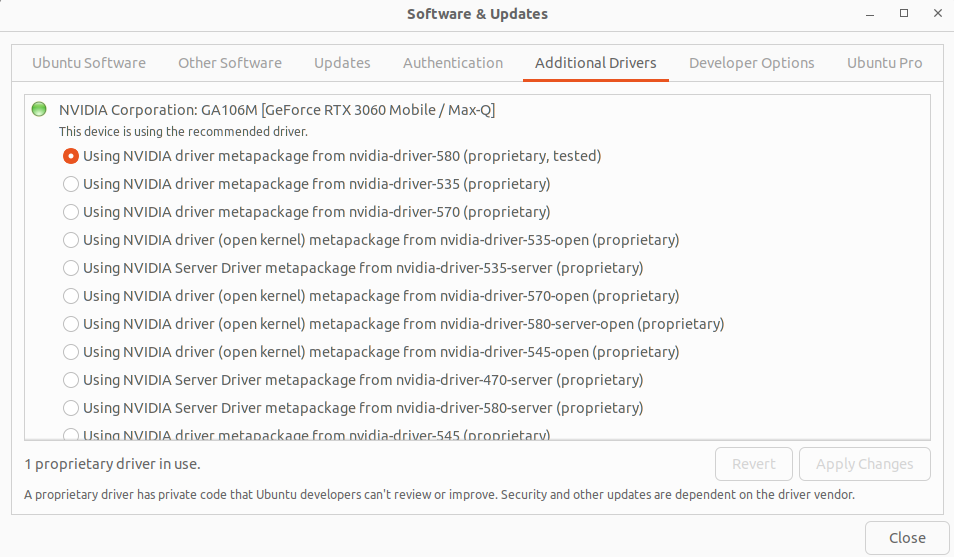
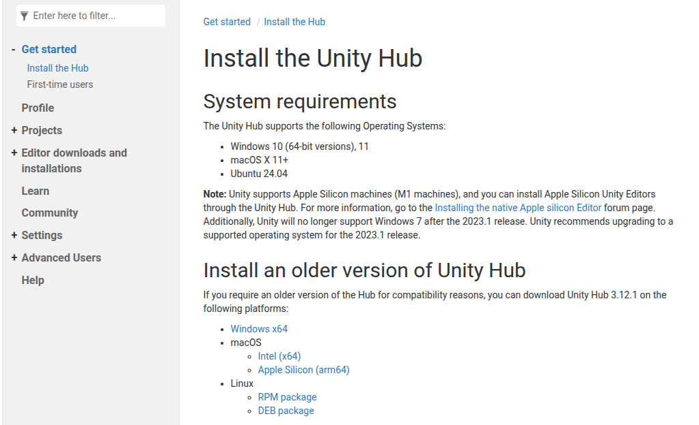
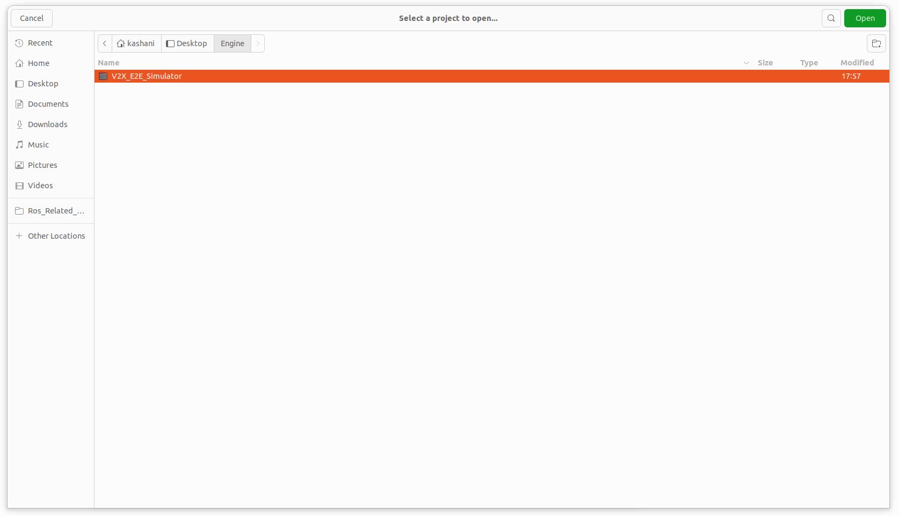
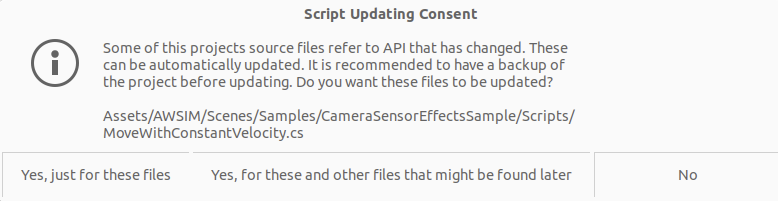
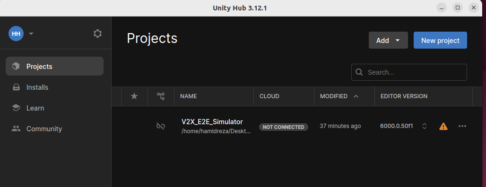
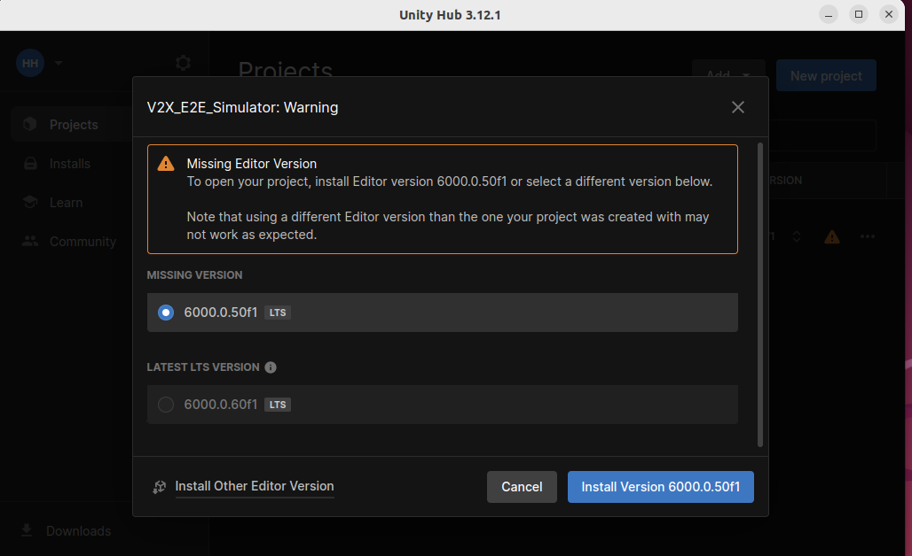
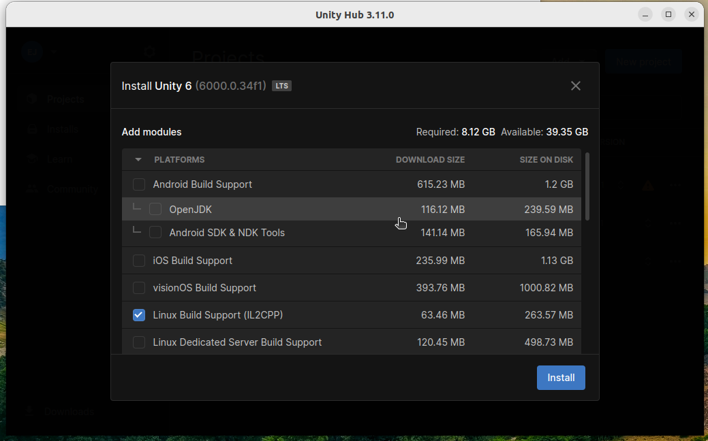
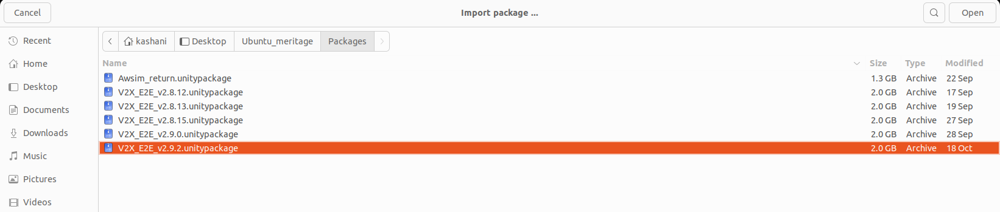
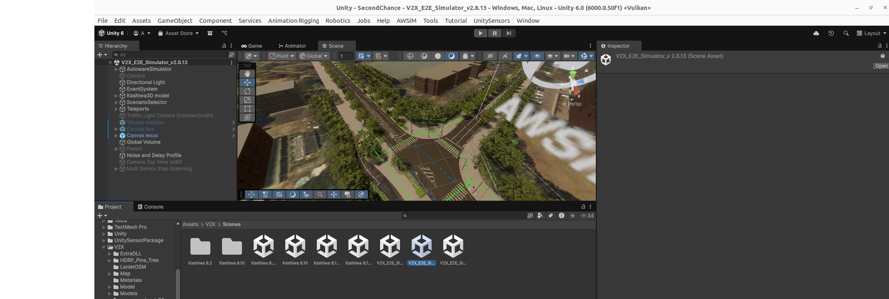
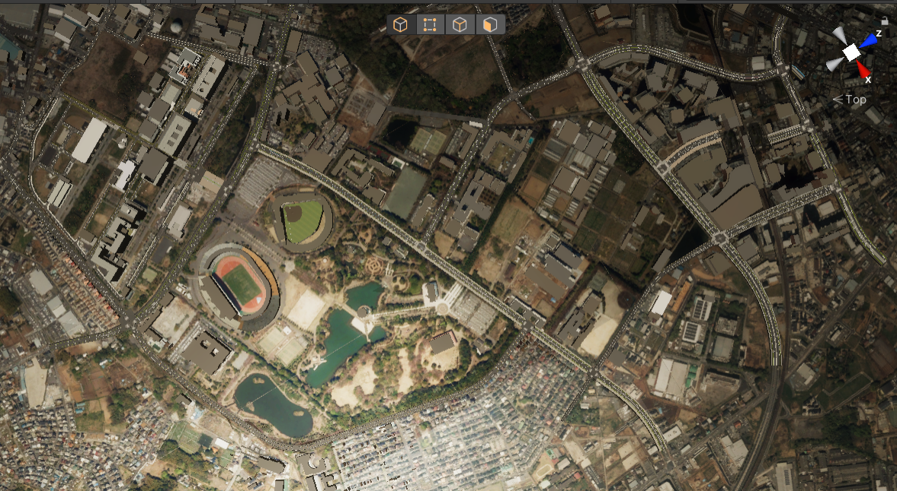

Setup Unity Project
Info
It is advised to checkout the Quick Start Demo tutorial before reading this section.
This page is a tutorial for setting up V2X_E2E Simulator in Unity project.
Environment preparation
System setup (Ubuntu 22)
-
Make sure your machine meets the required hardware specifications.
- NOTE: PC requirements may vary depending on simulation contents which may change as the simulator develops
-
Prepare a desktop PC with Ubuntu 22.04 installed.
-
Install git.
-
Set the ROS 2 middleware and the localhost only mode in
~/.profile(or, in~/.bash_profileor~/bash_loginif either of those exists) file:export ROS_LOCALHOST_ONLY=1 export RMW_IMPLEMENTATION=rmw_cyclonedds_cppWarning
A system restart is required for these changes to work.
-
Set the system optimizations by adding this code to the very bottom of your
~/.bashrcfile:if [ ! -e /tmp/cycloneDDS_configured ]; then sudo sysctl -w net.core.rmem_max=2147483647 sudo ip link set lo multicast on touch /tmp/cycloneDDS_configured fiInfo
As a result, each time you run the terminal (bash prompt), your OS will be configured for the best ROS 2 performance. Make sure you open your terminal at least once before running any instance of the V2X_E2E Simulator (or the Editor running the V2X_E2E Simulator).
-
install nvidia driver, The easiest way to be sure about your version is by using 'Software & Updates' in Ubuntu.
Warning
Currently, there are cases where the Nvidia driver version is incomptable, resulting in Segmentation fault. In that case, please use the tested Nvidia driver version in our case is 580.

ROS 2
V2X_E2E Simulator comes with a standalone flavor of Ros2ForUnity. This means that, to avoid internal conflicts between different ROS 2 versions, you shouldn't run the Editor or V2X_E2E Simulator binary with ROS 2 sourced.
Warning
Do not run the V2X_E2E Simulator, Unity Hub, or the Editor with ROS 2 sourced.
- Make sure that the terminal which you are using to run Unity Hub, Editor, or V2X doesn't have ROS 2 sourced.
- It is common to have ROS 2 sourced automatically with
~/.bashrcor~/.profile. Make sure it is not obscuring your working environment:- Running Unity Hub from the Ubuntu GUI menu takes the environment configuration from
~/.profile. - Running Unity Hub from the terminal uses the current terminal configuration from
~/.profileand~/.bashrc. - Running Unity Editor from the UnityHub inherits the environment setup from the Unity Hub.
- Running Unity Hub from the Ubuntu GUI menu takes the environment configuration from
Unity installation
Info
V2X_E2E Simulator's Unity version is currently unity 6000.0.50f1
Follow the steps below to install Unity on your machine:
-
Install UnityHub to manage Unity projects. Please go to Unity download page and download the DEB package link.

-
Install Unity 6 via UnityHub.
- Open new terminal, navigate to directory where
UnityHub.AppImageis download and execute the following command (or find the unityhub icon and run it):./UnityHub.AppImage - Make sure you have the V2X repository cloned and ROS 2 is not sourced.
git clone https://github.com/tlab-wide/V2X_E2E_Simulator.git - Now we add the project to unity hub

- In this step, you have to select either 'V2X_E2E_Simulator'.

Warning
You may see a window during this step that says you need to install the Editor first. The window provides two options: Open and Cancel. At this stage, the Open button does not function, so select Cancel to continue instructions.
Warning
If you see this message select the Yes, for these and other files that might be found later

- Then, you will see this error (if you don't already have the exact version of Unity 6).

- To fix this issue, install the correct version by clicking on the warning sign and selecting the shown version.

- Only select the Linux Build Support. If you add other packages, you won't face any problems, but the installation will take longer. You can also install other packages later.

- After successful installation the version will be available under the
Installstab in Unity Hub (your Unity6 can be different in minor version section).
- Open new terminal, navigate to directory where
Warning
- Download libssl
$ wget http://security.ubuntu.com/ubuntu/pool/main/o/openssl1.0/libssl1.0.0_1.0.2n-1ubuntu5.13_amd64.deb - Install
sudo dpkg -i libssl1.0.0_1.0.2n-1ubuntu5.13_amd64.deb
Import external packages
To properly run and use our project in Unity it is required to download map package which is not included in the repository.
-
Download and import the latest V2X_E2E_
-
In Unity Editor, from the menu bar at the top, select
Assets -> Import Package -> Custom Package...and navigate theV2X_E2E_<version>.unitypackagefile (or each version that you desire or download, in the image picture bleongs to V2X_E2E_v2_8_13.unitypackage).
Select the version you downloaded from the link (it may differ from the one shown—you likely have a newer version)

Dont need to make any changes in this step and only press the import button
3.The package has been successfully imported under Assets/V2X/Scenes/directory.

Info
The Externals directory is added to the .gitignore because the map has a large file size and should not be directly uploaded to the repository.
*NOTE: There is a high probability that the engine may crash once during the installation of this package due to the excessive RAM required, but there is no problem, and the installation will complete after a minute.
